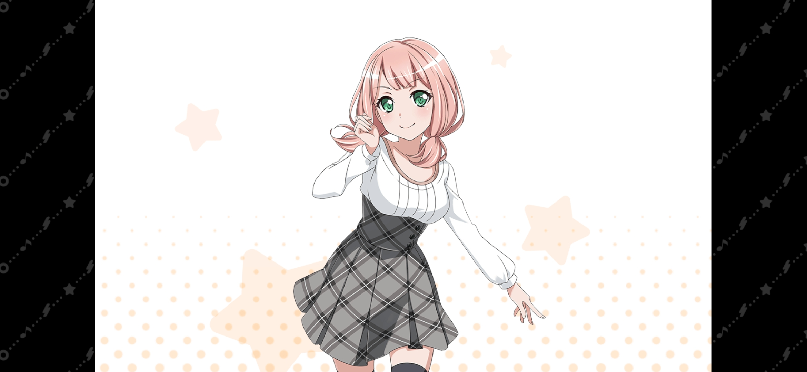
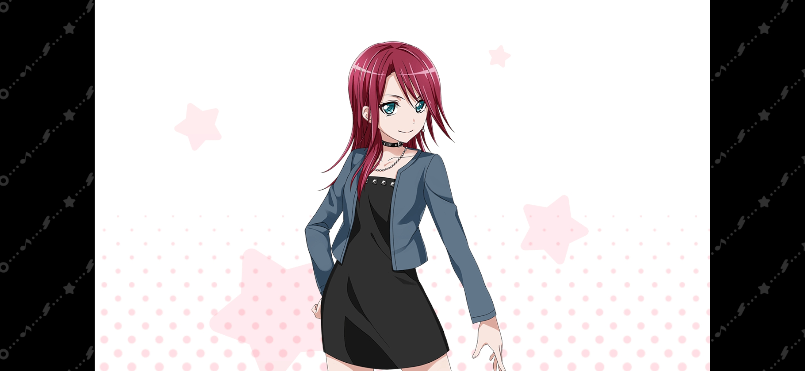

| 圖片 | 姓名 | 擔當 | 聲優 | 生日 | 身高 | 簡介 |
|---|---|---|---|---|---|---|
| 美竹蘭 | 主唱&吉他手 | 佐倉綾音 | 4月10日 | 157cm | 就讀於羽丘女子學園。擁有百年歷史的花道家族中的獨生女，起初卻在父親的反對下組樂團。 穿起花道衣服時還挺淑女的、個性好強（傲嬌）、討厭失敗，可是雖然外表看上去很孤僻、堅強，心裡卻是很害怕寂寞。 非常重視親人和朋友，特別是和她組團的4位青梅竹馬。 |
|
| 青葉摩卡 | 吉他手 | 三澤紗千香 | 9月3日 | 158cm | 對於沒興趣的東西完全不在乎，而為了喜歡的人（蘭）就能拼盡全力的類型。 喜歡對於一件事堅持到底，樂器便是其中之一。 就讀於羽丘女子學園，Afterglow里最神秘的成員，不想透露的事會用話術矇混過去。 就連她的四位青梅竹馬也不完全了解她。 可是即便這樣，她依然和她們是分不開的。 當蘭因為新學年分班時和朋友分開時，為了讓獨自一個班級的蘭不會感到寂寞，就組成了Afterglow（夕陽紅）樂隊，擔當吉他手。 |
|
|  | 上原緋瑪麗 | 貝斯手 | 加藤英美里 | 10月23日 | 155cm | 樂隊Afterglow的貝斯手，就讀於羽丘女子學園。 性格開朗和善的開心果，經常因為不會察言觀色而導致最後白忙一場。 作為樂隊中最樂天的一員，她是五人的協調者夕陽紅樂團媽媽，和鶇擔當著中間人的位置。 除了做中間人，她還自願擔當樂團的隊長導致樂隊名字差一點點就變成了ひまりBand。 也是整個Afterglow中最具有女子力的成員。 |
|  | 宇田川巴 | 鼓手 | 日笠陽子 | 4月15日 | 168cm | 就讀於羽丘女子學園。性格豪爽乾脆，不會輕易批評或怨恨他人。 Afterglow里最可靠的一位。 商店街有祭典活動時，會去打和太鼓。 因為性格爽快，聲線也偏向於少年，所以經常給人一種像男生的感覺，讓緋瑪麗還萌生了要倒追的想法，在成立Afterglow之前曾是短髮。 和商店街的大人很熟，樂於助人。 身材高挑，就連自己的青梅竹馬們都覺得她們不是同年的。 看上去有點像不良少女，但實際上是個溫柔的大姐姐。 |
 |
羽澤鶇 | 鍵盤手 | 金元壽子 | 1月7日 | 156cm | Afterglow中最平凡的女孩子，但是正因為普通的關係，是一個努力家，無論多小的事都不會放棄。 就讀於羽丘女子學園，是一名學生會幹事。 升上高二後成為學生會副會長，經常被時任學生會長冰川日菜拖著到處跑。 升入高三後正式接任學生會長。 |